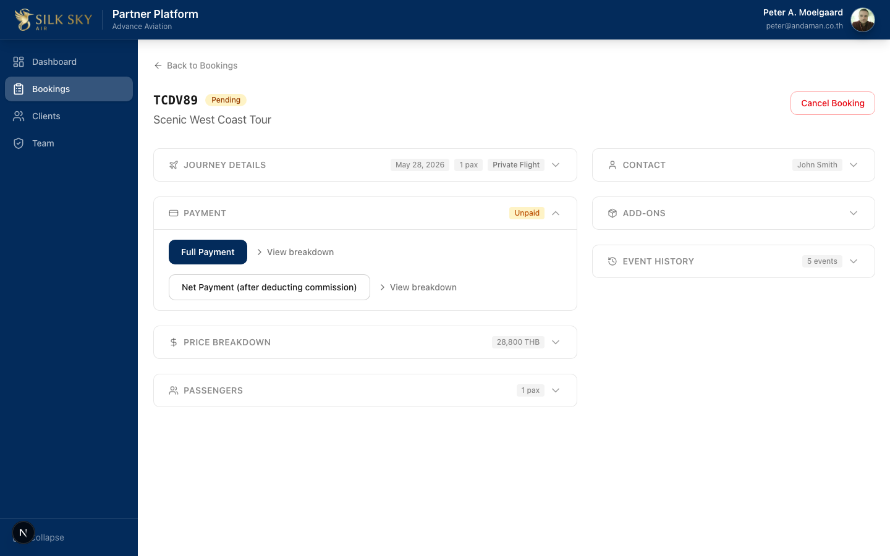
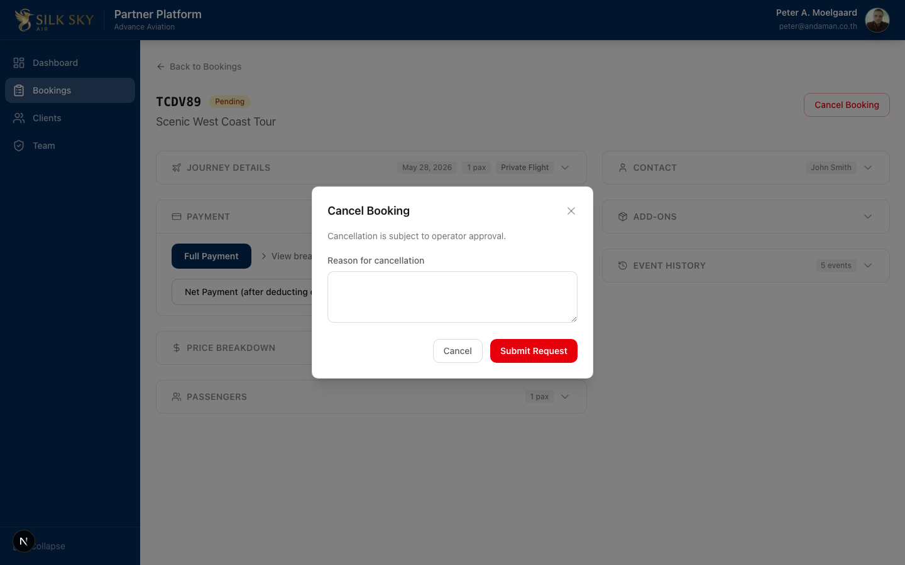
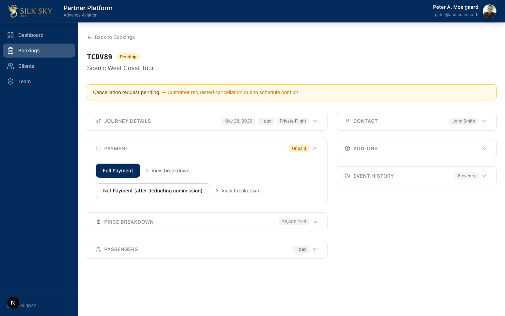
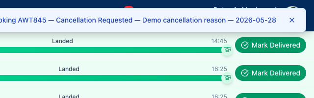
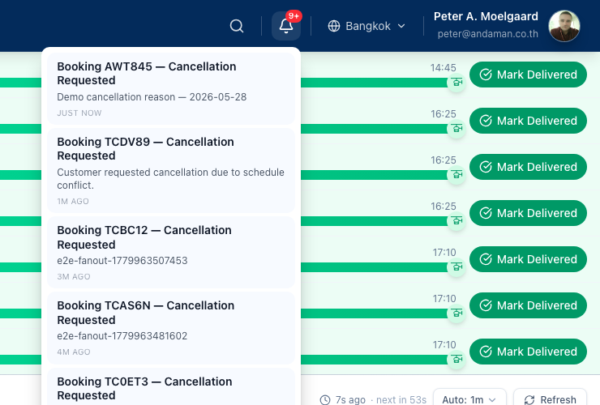

Cancellation Flow (Partner-initiated)
Apps: Partner Portal (initiates) · BackOffice / Manager (receives notification + email) · Customer (receives confirmation email) Who uses it: Partner ops staff cancelling a booking on the customer's behalf; SilkSky back-office managers handling the cancellation request; the customer receiving the acknowledgement. What it does: Records a partner-initiated cancellation request as a
BookingCancellationRequestedbooking event. That single event fans out to three parallel surfaces:
- Cancellation request banner on the partner's booking detail page (no more Cancel Booking button)
- In-app notification in BackOffice — bell badge + realtime toast for every
booking_manageruser- Two emails via the n8n bookings-event dispatcher: one to the back-office team (review + decide), one to the customer (acknowledgement that the request was received)
Before you start
- Partner Portal staging:
https://staging.partner.silkskyair.com - BackOffice / Manager staging:
https://staging.manager.silkskyair.com - Account (partner-side): Sign in as a Partner Portal user attached to the partner organization that owns the booking (e.g.
peter@andaman.co.thfor Advance Aviation on local). - Account (back-office side): Sign in to Manager as any user with the
booking_managerrole. - Prerequisites: A booking in a cancellable status. On the partner detail page, the Cancel Booking button is only rendered when
isAmendable === trueand no cancellation request is already pending.
Step-by-step
Step 1 — Open the booking on Partner Portal
From the Bookings list, click into the booking you want to cancel. On the booking detail page, the Cancel Booking button is shown at the top right next to the reference code.

What you should see: Booking header with reference code + status (e.g. Pending), tour title underneath, and a red-outlined Cancel Booking button at top right.
Step 2 — Open the cancellation dialog
Click Cancel Booking. A modal dialog opens centred over the page with a warning, a reason text area, and Cancel / Submit Request buttons.

What you should see: Modal titled Cancel Booking, line of warning copy ("Cancellation is subject to operator approval."), labelled Reason for cancellation text area, secondary Cancel button and primary red Submit Request button.
Step 3 — Enter a reason and submit
Type a clear explanation of why the customer is asking to cancel. Free text — keep it short and specific, the back-office team will read it.
What you should see: Same dialog with the reason typed into the text area. Submit Request stays enabled until you click it.
Click Submit Request. The dialog closes and the booking detail page refreshes.
Step 4 — Partner side: cancellation request banner
After submission, the booking detail page replaces the Cancel Booking button with an amber banner showing the request status and the reason that was just submitted. The booking remains in its current status (Pending / Confirmed) until back-office acts on the request.

What you should see: An amber Cancellation request pending. — [your reason] banner above Journey Details. The Cancel Booking button is gone. Event History shows a new BookingCancellationRequested entry.
Step 5 — BackOffice side: realtime toast
Within a few seconds of partner submitting, every BackOffice user with the booking_manager role sees a toast notification pushed live via Supabase Realtime. The toast surfaces the booking reference, the event type, and the partner-supplied reason.

What you should see: A toast at top-right reading Booking <REF> — Cancellation Requested — <reason>. The toast is dismissable; missing it doesn't lose the notification — the bell still has the unread row.
Step 6 — BackOffice side: notification bell + dropdown
The notification bell in the BackOffice header shows the new unread count. Clicking the bell opens a dropdown listing every unread notification, most recent first. Each row links to the relevant booking and marks itself read on click.

What you should see: Bell icon in header with a numeric badge (e.g. 9+). Dropdown lists rows of the form Booking <REF> — Cancellation Requested, with the reason on the second line and a relative timestamp (JUST NOW, 1M AGO, etc.). Clicking a row navigates to the booking detail page in BackOffice and clears that row's unread state.
Step 7 — Manager and customer emails (background)
In parallel with the in-app notification, the n8n bookings-event workflow renders two emails through the existing booking-manager-email / booking-member-email sub-workflows:
- Manager email — sent to every user with the
booking_managerrole. Template:booking-cancellation-requested-manager. Subject:Booking <REF> — Cancellation Requested. Body includes booking ref, tour, date/time, passenger count, contact name + email, and a Review Cancellation Request CTA linking back to the BackOffice booking page. - Customer email — sent to the booking's lead contact (
bookings_snapshot.contact.email). Template:booking-cancellation-requested-customer. Subject:Cancellation request received — Booking <REF>. Body acknowledges receipt and tells the customer the team will follow up; no further action required from them.
Both templates exist in EN, TH, and RU, selected per the booking's locale. The sender_name column (added in migration 20260527160000) drives the SMTP From: header so the address is localised too.
Tips & common questions
- Why are there two notification surfaces (bell + email) and not one? The bell + Realtime path is durable across n8n downtime (the DB trigger fires in the same transaction as the partner's cancel, before any HTTP hop). The email path delivers to users who aren't currently in BackOffice. Together they guarantee at least one manager sees the request, fast.
- What status does the booking move to after Submit Request? None automatically.
BookingCancellationRequestedis a request, not a state transition — it doesn't change the booking's status. Back-office acts on it (approve → cancel, or decline) via a separate flow. - What stops a partner from submitting twice? The cancel route checks
booking_eventsfor an existingBookingCancellationRequestedrow for the booking. If one exists, the API returns409 Conflict: A cancellation request is already pendingand the UI shows the banner instead of the button. - What if the n8n workflow is down when the partner submits? The booking event row is still inserted (the partner sees the banner) and the in-app notification still fans out (the DB trigger doesn't depend on n8n). Only the two emails are delayed — they fire when n8n recovers, via the same execution queue.
- What if I want to cancel for a customer who needs an immediate refund? Submit the cancellation as usual, then handle the refund through the back-office payment workflow. The
BookingRefundPendingevent type is part of the same dispatcher (seebookings-event.jsonslugMap), with its own template. - Locale of the emails — partner's, customer's, or the manager's? The booking's locale (set at booking creation). Manager template and customer template are both rendered in that locale. The sender name in the From: header matches.
Reference
- Code (partner):
silkskyair-partner/app/api/bookings/[id]/cancel/route.ts·silkskyair-partner/components/bookings/booking-cancel-dialog.tsx·silkskyair-partner/components/bookings/booking-detail-partner.tsx(banner rendering) - Code (manager bell):
silkskyair-manager/components/notifications/notification-bell.tsx(bell + dropdown) ·silkskyair-manager/lib/toast-emitter.ts(global toast bus) - Migrations:
silkskyair-api/supabase/migrations/20260527150000_booking_cancellation_notifications.sql(DB trigger fans out toaccount.notifications) ·silkskyair-api/supabase/migrations/20260215130000_booking_email_templates.sql(manager template) ·silkskyair-api/supabase/migrations/20260528110000_booking_cancellation_requested_customer_template.sql(customer template — F1.15 addition) - Workflow:
silkskyair-workflows/workflows/bookings/bookings-event.json— Switch CR output routes to BOTHfetch-booking-customer-notes(manager pipeline) ANDprepare-member-email-data(customer pipeline). Member slugMap entry'BookingCancellationRequested': 'booking-cancellation-requested-customer'selects the new template. - E2E:
silkskyair-manager/e2e/manager-notification-bell.spec.ts— partner cancel → bell badge + toast + click-to-readsilkskyair-partner/e2e/partner-cancel-booking-email-fanout.spec.ts— partner cancel → both n8n email branches succeed (asserted via n8n executions API since local SMTP goes through real Zoho, not MailPit)